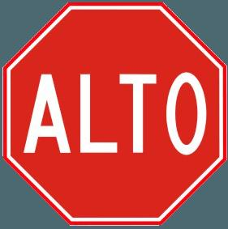

¿Cuál es la problemática?
En México, miles de accidentes viales ocurren cada año debido a la falta de atención o desconocimiento de las señales de tránsito. Muchos conductores, ciclistas y peatones no identifican correctamente las señales, lo que pone en riesgo su seguridad y la de los demás.
Este proyecto surge para ayudar a reconocer y aprender las señales de tránsito mexicanas usando inteligencia artificial, promoviendo así una cultura vial más segura y responsable.
¿Por qué esta aplicación?
Mejora la seguridad vial y la educación sobre señales de tránsito en México usando IA.
Características Principales
- Reconocimiento en tiempo real de señales mexicanas
- Modo educativo y juego interactivo
- Estadísticas de detección
¿Cómo funciona?
Utiliza un modelo de TensorFlow.js entrenado para reconocer señales mexicanas en tiempo real y brindar información detallada.
Galería de Señales
Alto
 Límite de velocidad
Límite de velocidad Vuelta prohibida
Vuelta prohibida Cruce escolar
Cruce escolar Cruce peatonal
Cruce peatonal Cruce de bicicletas
Cruce de bicicletasConsejos de Seguridad Vial
- Respeta siempre las señales de tránsito y los límites de velocidad.
- Detente completamente en los altos, aunque no veas vehículos.
- Cede el paso a peatones y ciclistas en los cruces.
- No uses el celular mientras conduces.
- Usa el cinturón de seguridad y exige que todos lo usen.
Estadísticas de Accidentes
+377,000
Accidentes viales al año en México
90%
De los accidentes son por error humano
Top 3
Causas: distracción, exceso de velocidad y no respetar señales
Preguntas Frecuentes
Porque ayudan a prevenir accidentes y a mantener el orden y la seguridad en las vías.
Practicando con simuladores, juegos y observando las señales en la vida real.
Consulta el reglamento de tránsito local o pregunta a un experto en seguridad vial.
Enlaces Útiles
Ranking de Puntajes
Simulación Dashcam
Señales Detectadas
0
Precisión Promedio
0%
Última Señal
-
Esperando predicción...